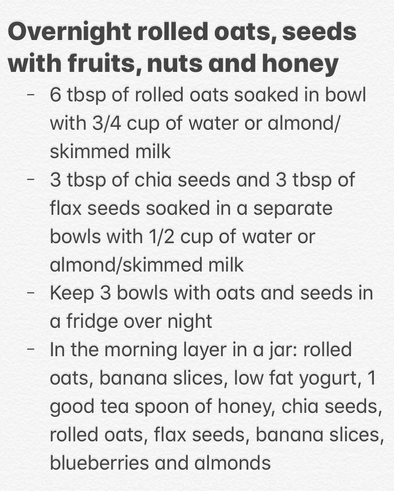

How is everyone doing? Our #cirquitbreaker #lockdown in Singapore has been extended till June 1, so 6 more weeks of #stayhome life. It’s hard to believe that by the time it’s over (hopefully) half of this year will be gone 😧! On the other hand, it’s good that half of this tough year is almost over. We have a feeling that the next one will be better 😄 Anyway, let us share with you this beautiful breakfast in a jar with overnight rolled oats, seeds, banana 🍌, blueberries, almonds and honey 🍯🤤 we like it a lot. When soaked overnight, oats and seeds taste differently than cooked as a porridge: fresher, lighter, with more texture. You should definitely try this power breakfast 💪🏼 it’s packed with so many nutrients that all of us need especially during these stressful days. Swipe left for recipe and make it for your family tomorrow 😉 . . . . . Как у всех дела? У нас в Сингапуре продлили изоляцию до 1 июня, так что #сидимдома ещё 6 недель. Сложно поверить, что к концу изоляции пройдёт уже половина этого года 😧 а может быть оно и к лучшему 🤔 есть такое ощущение, что следующий будет лучше 😄 В любом случае, позвольте с вами поделиться этим красивым завтраком. Замоченные на ночь овсяные хлопья, семена чии и льна, с бананом, голубикой, миндалем и мёдом. Замоченные на ночь овсянка и семена приобретают другой более легкий и свежий вкус, нежели сваренные как каша. Рекомендуем попробовать этот весьма полезный завтрак, богатый полезными веществами, которые так сильна нам сейчас нужны!
2020-04-21 20:50:53
Back to main page